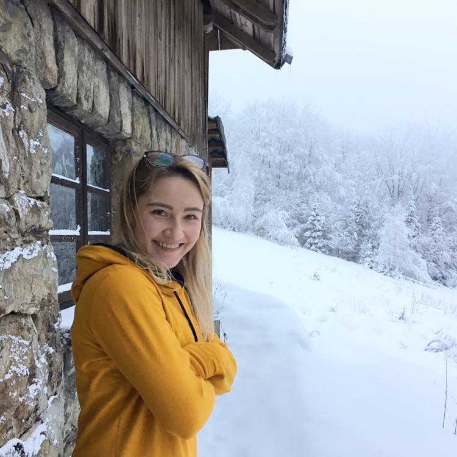

  <div class="card">
    <div class="card-body">
      <div class="row">
        <h3 class="card-title col-12 my-5 text-center">Nazywam się Ola Matejko i jestem fotografem.</h3>
        <div class="col-lg-6">
            
        </div>
        <div class="col-lg-6">
        <p class="card-text">Próbowałam w życiu już wielu rzeczy, od księgowości, przez pracę  jako instruktor fitness, ale to fotografia daje mi najwięcej radości i spełnienia. Spotkania z Wami, pełne uśmiechów i zadowolenia sprawiają, że kocham to, co robię i ciągle chcę się rozwijać oraz szlifować swoje umiejętności.</p>

        <p class="card-text"> Wiem, jak ważna jest atmosfera na sesji, dlatego wszystko zawsze odbywa się w luźnym klimacie. Pijemy kawę, śmiejemy się, żartujemy i dużo rozmawiamy. Uwielbiam słuchać i poznawać Wasze historie, tak szczerze, bez ściemy.</p>

        <p class="card-text">Mimo luźnej atmosfery, sesje foto zawsze odbywają się w profesjonalny sposób. Daję z siebie 100 procent zarówno podczas samej sesji, jak i przy obróbce. Moim marzeniem jest, żebyście zawsze byli całkowicie zadowoleni z efektów.</p>

        <p class="card-text">Kocham naturę i naturalność, więc większość sesji odbywa się właśnie w otoczeniu przyrody lub w Waszych domach, czy miejscach, gdzie pragniecie zatrzymać wspólnie ze mną wasze codzienne życie.</p>

        <p class="card-text">Prywatnie jestem żoną, mamą dwóch dziewczynek i sportowym szaleńcem. Uwielbiam chodzić po górach, wspinać się, pić dobrą kawę i czytać mądre książki. Staram się jeść zdrowo, dużo się rozwijać mentalnie i zawodowo i, tak po prostu, być dobrym człowiekiem.</p>

        <p class="card-text">Jeśli chcesz umówić się na sesję lub po prostu coś mi powiedzieć, o coś zapytać to zapraszam do kontaktu mailowego – Aleks.matejko@gmail.com, lub sekcji
            <span><a class="btn-link" routerLink="/contact" target="_blank">kontakt</a></span>.
        Jeśli jesteś ciekawy jak wyglądają moje ostatnie sesje oraz życie prywatne – aktywnie działam na
        <span><a class="btn-link" href="https://www.instagram.com/whataboutbeinghappy/?hl=pl" target="_blank">Instagramie</a></span>
         – whataboutbeinghappy. Od kilku lat również bloguję, o naszej codzienności, dobrym jedzeniu, dzieciach, górach i podróżach – znajdziecie mnie na
         <span><a class="btn-link" href="https:/www.whataboutbeinghappy.com" target="_blank">www.whataboutbeinghappy.com</a></span>
        .
        </p>
      </div>
      </div>
    </div>
  </div>
